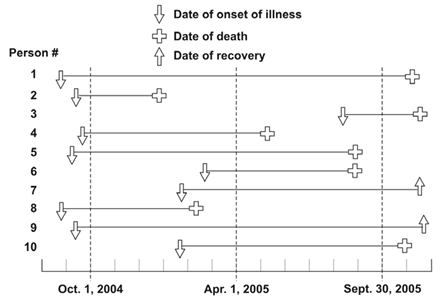
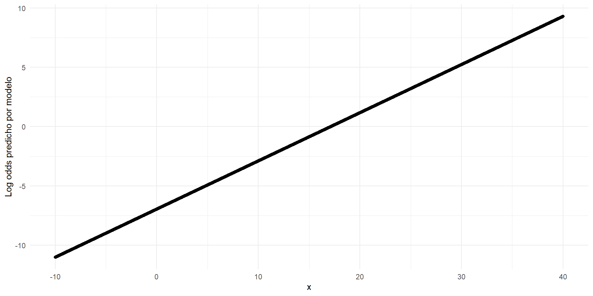
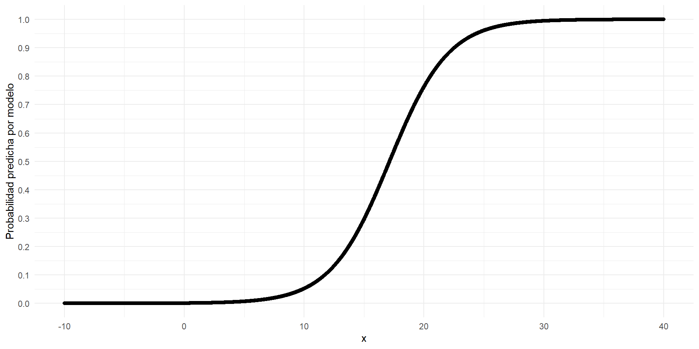
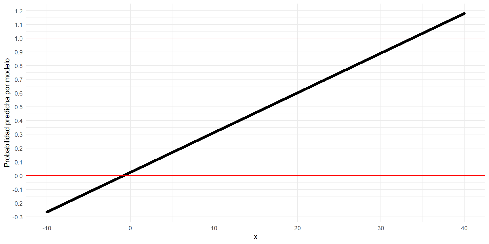
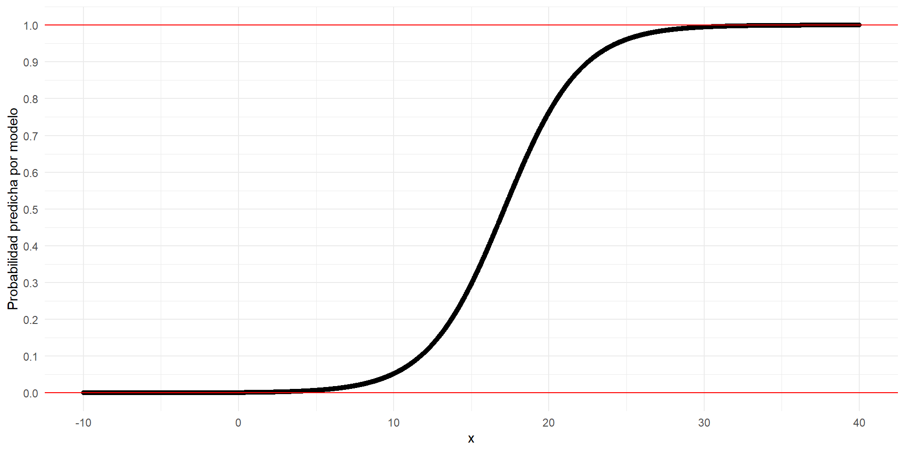

Sesión 10
Curso: R Aplicado a los Proyectos de Investigación
Percy Soto-Becerra, M.D., M.Sc(c)
InkaStats Data Science Solutions | Medical Branch
2022-10-24

Medidas de frecuencia para datos categóricos
Agenda
Medidas de frecuencia para datos categóricos
Medidas de asociación
Regresión Logística Binaria
Otras regresiones para datos binarios
Probabilidad teórica
La
probabilidades unamedidautilizada para evaluar laincertidumbre.
Es una medida
teórica(desconocida), que queremosestimar.Desde una perspectiva frecuentista, la
proporciónde eventos en infinitos experimentos aleatorios es unaprobabilidad.- Usamos la
proporción observadaen la muestra paraaproximarnosa laprobabilidad teórica.
- Usamos la
Otra forma de ver la probabildiad es a través de los
odds de probabilidad.
Proporción según diseño
En un estudio transversal, la
probabilidaddetenerunaenfermedades suprevalencia.- Numerador incluye casos
nuevosyantiguos. Denominadorestodalapoblación de interés.
- Numerador incluye casos
En un estudio de cohorte, la
probabilidadde desarrollar unaenfermedades suincidencia acumuada (IA).- También llamada
riesgo absoluto. En jerga epi:riesgo(a secas). - Numerador solo inclute
casos nuevos. Denominadores poblaciónsin eventoaliniciodelseguimiento.
- También llamada
Proporción
| Enfermedad | No enfermedad | Total | |
|---|---|---|---|
| Población | a | b | a + b |
Prevalencia
\[ Prev = \frac{a}{a + b} \]
Donde:
\(a\) = Casos totales (nuevos y antiguos)
\(a+b\) = Toda la población de interés en el punto/periodo de tiempo evaluado.
Incidencia acumulada
\[ IA = \frac{a}{a+b} \]
Donde:
\(a\): Solo incluye casos nuevos durante el seguimeinto.
\(a+b\): Toda la población si y solo sí al inicio todos ellos no tenían la enfermedad.
Prevalencia versus IA
Fuente: Principles of Epidemiology in Public Health Practice, Third Edition An Introduction to Applied Epidemiology and Biostatistics
Odds
Sea una variable \(Y\) que puede asumir dos valores 1 (ocurre el evento) o 0 (no ocurre el evento).
La probabilidad de que ocurra el evento es:
\[Pr(Y = 1) = \frac{\text{Número de eventos}}{\text{Total de observaciones}}\]
- El odds de que ocurra el evento es solo un cambio de escala:
\[Odds(Y = 1) = \frac{Pr(Y = 1)}{Pr(Y = 0)} = \frac{Pr(Y=1)}{1-Pr(Y=1)}\]
Odds (cont.)
Los odds son otra forma de presentar a las probabilidades.
Mantienen la dirección de su relación con las probabilidades.
Cuando las \(Pr\) son pequeñas, los \(Odds \simeq Pr\).
- Sin embargo, ¡esto no justifica que se interpreten igual!
| Pr | Odds |
|---|---|
| 0.00 | 0.0000000 |
| 0.01 | 0.0101010 |
| 0.02 | 0.0204082 |
| 0.03 | 0.0309278 |
| 0.04 | 0.0416667 |
| 0.05 | 0.0526316 |
Odds versus Probabilidad
La probabilidad y el odds no son iguales.
Odds diverge de Pr cuando el evento es más frecuente.
Interpretación
Cuando se estima prevalencia:
Si \(Pr = 0.6\) entonces \(Odds = \frac{0.6}{1 - 0.6} = 1.5\)
Probabilidad: De cada 100 individuos*, se espera que 60 tengan el evento.
Odds: La probabilidad de tener el evento es 1.5 veces la probabilidad de no tenerlo.
(*) En un punto/periodo de tiempo dado.
- Cuando se estima incidencia acumulada:
Si \(Pr = 0.6\) entonces \(Odds = \frac{0.6}{1 - 0.6} = 1.5\)
Probabilidad: De cada 100 individuos*, se espera que 60 desarrollen el evento nuevo durante el seguimeinto.
Odds: La probabilidad de desearrollar un evento nuevo es 1.5 veces la probabilidad de no desarrollarlo*
(*) En una población que al inicio no tenía el evento.
Diseño de estudio y probabilidad/odds
| Indicador | Diseño de estudio |
|---|---|
| Prevalencia | Transversal |
| Incidencia acumulada | Cohorte / Ensayo Clínico (EC) |
| Odds (prevalente) | Transversal / Caso-control de casos prevalentes |
| Odds (incidente) | Cohorte/EC/Caso-control de casos incidentes |
Medidas de asociación
Agenda
Medidas de frecuencia para datos categóricos
Medidas de asociación
Regresión Logística Binaria
Otras regresiones para datos binarios
Medidas de asociación
Podemos
compararlasprobabilidadesdeldesenlacesegún niveles de otravariable independiente(p. ej., tratamiento, factor de riesgo, etc.).Podemos comparar las probabilidades mediante una
restao mediante unadivisión.Nos centraremos en las medidas de asociación obtenidas mediante
división.
Medidas de asociación (resumen)
| Medidas de asociación | Definición | Diseño de estudio |
|---|---|---|
| Razón de odds (OR) | \(OR = \frac{Odds(Evento|Expuestos)}{Odds(Evento|No~Expuestos)}\) |
|
| Razón de prevalencias | \(RP = \frac{Pr(Evento|Expuestos)}{Pr(Evento|No~Expuestos)}\) |
|
| Razón de riesgos | \(RR = \frac{Pr(Evento|Expuestos)}{Pr(Evento|No~Expuestos)}\) |
|
Cálculo de medidas de asociación
- Los siguientes resultados de un ensayo clínico muestran lo siguiente:
| Tratamiento | Evento | No_evento | Total |
|---|---|---|---|
| Placebo | 50 | 950 | 1000 |
| Tratamiento | 25 | 975 | 1000 |
Razón de riesgos
- La razón de riesgos se calcularía de la siguiente manera:
| Tratamiento | Evento | No_evento | Total | Calculo_IA | Incidencia | Calculo_RR | RR |
|---|---|---|---|---|---|---|---|
| Placebo | 50 | 950 | 1000 | 50 / 1000 | 0.050 | 0.05 / 0.05 | 1.0 |
| Tratamiento | 25 | 975 | 1000 | 25 / 1000 | 0.025 | 0.025 / 0.05 | 0.5 |
- RR = 0.5 para Tratamiento.
Interpretación: El riesgo de desarrollar el evento en el grupo tratado fue 50% menor que en el grupo placebo.
Razón de odds
- La razón de odds (incidente) se calcularía de la siguiente manera:
| Tratamiento | Evento | No_evento | Total | Calculo_Odds | Odds | Calculo_OR | OR |
|---|---|---|---|---|---|---|---|
| Placebo | 50 | 950 | 1000 | 50 / 950 | 0.0526316 | 0.0526 / 0.0526 | 1.0000000 |
| Tratamiento | 25 | 975 | 1000 | 25 / 975 | 0.0256410 | 0.0256 / 0.0526 | 0.4871795 |
- OR = 0.49 para Tratamiento.
Interpretación: El odds de desarrollar el evento en el grupo tratado fue 49% menor que en el grupo placebo.
Razón de riesgos y de odds (incidentes)
Los
ORy losRRse aproximan si eleventoespoco frecuente.Pero si
eventoesfrecuente, entoncesdivergen.Por ese motivo, los
OR no deben ser interpretados como RR.
Problemas con análisis bivariado
¿Qué pasa si queremos ajustar por otra variable?
¿Qué pasa si no tenemos una variable numérica y queremos relacionarla con el desenlace binario?
En ambos casos, podemos realizar un modelo de regresión para datos binarios:
Regresión logística binaria
Regresión log-binomial
Regresión de Poisson modificada
Regresión Logística Binaria
Agenda
Medidas de frecuencia para datos categóricos
Medidas de asociación
Regresión Logística Binaria
Otras regresiones para datos binarios
Anatomía de la Regresión logística binaria
Caso específico de Modelo Lineal Generalizado.
Componente sistemático:
\[logit(y_i) = log(Odds(y_i = 1)) = log(\frac{Pr(y_i = 1))}{1 - Pr(y_i = 1)}) = \eta_i\]
- Función de enlace:
\[\eta_i = \beta_0 + \beta_1x_{1i} + ...+ \beta_px_{ip}\]
- Componente aleatorio:
\[y_i \sim Bernoulli(1, \pi_i)\]
Regresión logística binaria (cont.)
- Podemos estimar la \(Pr(y_i = 1)\) a partir del
predictor lineal: \(\pi_i = Pr(y_i = 1) = \frac{e^{\eta_i}}{1 + e^{\eta_i}}\)
- El modelo es lineal en escala
log odds:

- La ventaja de log odds es que \(-\infty < log(odds) <+\infty\).
- Pero no lineal en escala
probabilidad:

- La ventaja es que devuelve un modelo cuya probabiidad predicha está entre 0 y 1.
¿Por qué no usar regresión lineal?
- Si usamos regresión lineal, el modelo quedaría planetado de esta manera:
\[E(y_i) = Pr(y_i = 1) = \beta_0 + \beta_1x_{1i} + ...+ \beta_px_{ip}\]
- Entonces, el modelo predecirá probabilidades superiores a su rango 0-1:

- Mientras que regresión logística devolverá probabilidades dentro de rango 0-1:

La controversia del modelo lineal de probabilidad
Este modelo es conocido como
modelo de probabilidad linear.- No es útil para predicción, pero en econometría aún lo usan para explicación.
- El problema es que la validez del error estándar solo ocurre bajo ciertas condiciones. Es mejor usar modelos más apropiados.
Algunos artículos:
https://pubmed.ncbi.nlm.nih.gov/31218050/
https://academic.oup.com/aje/article-abstract/123/1/174/49113?redirectedFrom=fulltext&login=false
La controversia del modelo lineal de probabilidad
La regresión logística retorna OR
La regresión logística permite retonar directamente
razón de odds(OR).Los coeficientes de regresión \(\beta\) del modelo son \(log(OR)\), por lo tanto, podemos exponenciarlos para obtener los OR:
\[\beta = log(OR)\]
\[e^\beta = OR\]
Casos aplicado 1
Factores asociados a desarrollo de alergia en niños.
Especificación del modelo
mod <- glm(allergyc ~ smokem + smokef + allergym + allergyf,
family = binomial(link = "logit"),
data = datos_allergy)
summary(mod)
Call:
glm(formula = allergyc ~ smokem + smokef + allergym + allergyf,
family = binomial(link = "logit"), data = datos_allergy)
Deviance Residuals:
Min 1Q Median 3Q Max
-1.2345 -0.9159 -0.7282 1.3215 1.9142
Coefficients:
Estimate Std. Error z value Pr(>|z|)
(Intercept) -1.6577 0.1480 -11.204 < 2e-16 ***
smokem 0.4714 0.1477 3.191 0.001418 **
smokef 0.5401 0.1416 3.813 0.000137 ***
allergym 0.4657 0.1434 3.248 0.001161 **
allergyf 0.3137 0.1356 2.314 0.020694 *
---
Signif. codes: 0 '***' 0.001 '**' 0.01 '*' 0.05 '.' 0.1 ' ' 1
(Dispersion parameter for binomial family taken to be 1)
Null deviance: 1386.9 on 1124 degrees of freedom
Residual deviance: 1338.5 on 1120 degrees of freedom
AIC: 1348.5
Number of Fisher Scoring iterations: 4| term | estimate | std.error | statistic | p.value | conf.low | conf.high |
|---|---|---|---|---|---|---|
| (Intercept) | 0.1905801 | 0.1479590 | -11.203667 | 3.911979e-29 | 0.1417981 | 0.2533683 |
| smokem | 1.6022634 | 0.1477348 | 3.190968 | 1.417968e-03 | 1.2007109 | 2.1435105 |
| smokef | 1.7162328 | 0.1416441 | 3.813301 | 1.371229e-04 | 1.3013358 | 2.2681936 |
| allergym | 1.5930869 | 0.1433559 | 3.248374 | 1.160666e-03 | 1.2030369 | 2.1110603 |
| allergyf | 1.3684143 | 0.1355733 | 2.313528 | 2.069365e-02 | 1.0486014 | 1.7845927 |
smokem: El odds de desarrollar alergia en niños de madres fumadoras es 1.6 veces el de niños de madres no fumadoras, controlando por antecedente de fumar de padre, alergia de madre y alergia de padre (OR = 1.6; IC95% 1.20 a 2.14; p < 0.001).smokef: El odds de desarrollar alergia en niños de papás fumadoras es 1.72 veces el de niños de papás no fumadoras, controlando por antecedente de fumar de madre, alergia de madre y alergia de padre (OR = 1.72; IC95% 1.30 a 2.27; p = 0.001.allergym: El odds de desarrollar alergia en niños de madres con alergias es 1.59 veces el de niños de madres sin alergia, controlando por antecedente de fumar de madre, antecedente de fumar del papá, y alergia del papá (OR = 1.59; IC95% 1.20 a 2.11; p = 0.001).allergyf: El odds de desarrollar alergia en niños de papás con alergias es 1.37 veces el de niños de papás sin alergia, controlando por antecedente de fumar de madre, antecedente de fumar del papá, y alergia de la madre (OR = 1.37; IC95% 1.05 a 1.78; p = 0.021).
Linealidad del \(logit(y_i = 1)\) respecto a los predictores.
Observaciones son independientes.
\(Y_i\) sigue distribución de bernoulli.
No problemas de regresión:
No puntos influyentes
No colinealidad: Solo cuando esta es un problema.
- Todas las covariables son categóricas, por lo que la linealidad no es un problema en este modelo.
Casos aplicado 2
Factores asociados a tener lumbalgia a 5 años de seguimeinto.
Especificación del modelo
mod <- glm(bp5 ~ bp0 + sex + age + phyocc + social,
family = binomial(link = "logit"),
data = datos_backpain)
summary(mod)
Call:
glm(formula = bp5 ~ bp0 + sex + age + phyocc + social, family = binomial(link = "logit"),
data = datos_backpain)
Deviance Residuals:
Min 1Q Median 3Q Max
-0.8376 -0.6390 -0.5445 -0.4522 2.2500
Coefficients:
Estimate Std. Error z value Pr(>|z|)
(Intercept) -2.32105 0.66735 -3.478 0.000505 ***
bp0 -0.07754 0.20862 -0.372 0.710123
sexfemale 0.37870 0.16619 2.279 0.022684 *
age 0.01291 0.01446 0.893 0.371905
phyocc2 - low -0.46094 0.31224 -1.476 0.139875
phyocc3 - moderate -0.03143 0.28279 -0.111 0.911501
phyocc4 - heavy 0.44284 0.31320 1.414 0.157385
socialself employed -0.25900 0.23512 -1.102 0.270657
socialwhite collar -0.01484 0.21221 -0.070 0.944266
---
Signif. codes: 0 '***' 0.001 '**' 0.01 '*' 0.05 '.' 0.1 ' ' 1
(Dispersion parameter for binomial family taken to be 1)
Null deviance: 992.22 on 1123 degrees of freedom
Residual deviance: 971.86 on 1115 degrees of freedom
(195 observations deleted due to missingness)
AIC: 989.86
Number of Fisher Scoring iterations: 4# A tibble: 9 × 7
term estimate std.error statistic p.value conf.low conf.high
<chr> <dbl> <dbl> <dbl> <dbl> <dbl> <dbl>
1 (Intercept) 0.0982 0.667 -3.48 0.000505 0.0261 0.358
2 bp0 0.925 0.209 -0.372 0.710 0.607 1.38
3 sexfemale 1.46 0.166 2.28 0.0227 1.06 2.03
4 age 1.01 0.0145 0.893 0.372 0.985 1.04
5 phyocc2 - low 0.631 0.312 -1.48 0.140 0.343 1.17
6 phyocc3 - moderate 0.969 0.283 -0.111 0.912 0.564 1.72
7 phyocc4 - heavy 1.56 0.313 1.41 0.157 0.853 2.92
8 socialself employed 0.772 0.235 -1.10 0.271 0.481 1.21
9 socialwhite collar 0.985 0.212 -0.0699 0.944 0.650 1.50 bp0: El odds de tener dolor lumbar crónico en quienes reportaron antecedente de lumbalgia fue 7% menor que en quienes negaron antecedente de lumbalgia, luego de controlar por sexo, edad, nivel de actividad física y estatus social. Sin embargo, no se cuenta con suficiente evidencia estadística para concluir que la asociación exista en la población debido a la gran imprecisión de la estimación (OR = 0.93; 95%CI 0.61 a 1.38, p = 0.710).sex: El odds de tener dolor lumbar crónica en mujeres fue 1.46 veces el de varones, luego de controlar por antecedente de lumbalgia, edad, nivel de actividad física y estatus social (OR = 1.46; 95%CI 1.06 a 2.03; p = 0.023).age: El aumento en un año de edad se asocia a un aumento de 1.3% de los odds de tener dolor lumbar crónico, luego de controlar por sexo, antecedente de lumbalgia, nivel de actividad física y estatus social (OR = 1.01; 95%CI 0.98 a 1.04; p = 0.372). Teniendo en cuenta la incertidumbre de la estimación, no podemos afirmar si esta relación existe en la población.phyocc - low: El odds de tener dolor lumbar crónico en quienes reportan niveles bajos de actividad física es 37% menor que en quienes reportan niveles de actividad física muy bajos, luego de controlar por sexo, antecedente de lumbalgia, edad y estatus social (OR = 0.63; 95%CI 0.34 a 1.17; p = 0.140). La gran varibabilidad muestral previene que podamos afirmar la existencia de una relación en la población.phyocc - moderate: El odds de tener dolor lumbar crónico en quienes reportan niveles moderados de actividad física es 3% menor que en quienes reportan niveles de actividad física muy bajos, luego de controlar por sexo, antecedente de lumbalgia, edad y estatus social (OR = 0.97; 95%CI 0.56 a 1.72; p = 0.912). Teniendo en cuenta la incertidumbre de la estimación, no podemos afirmar si esta relación existe en la población.phyocc - heavy: El odds de tener dolor lumbar crónico en quienes reportan niveles intensos de actividad física es 1.56 veces mayor que en quienes reportan niveles de actividad física muy bajos, luego de controlar por sexo, antecedente de lumbalgia, edad y estatus social (OR = 1.56; 95%CI 0.85 a 2.92; p = 0.157). Teniendo en cuenta la incertidumbre de la estimación, no podemos afirmar si esta relación existe en la población.socialself employed: [completar]socialwhite collar: [completar]
Linealidad del \(logit(y_i = 1)\) respecto a los predictores.
Observaciones son independientes.
\(Y_i\) sigue distribución de bernoulli.
No problemas de regresión:
No puntos influyentes
No colinealidad: Solo cuando esta es un problema.
Otras regresiones para datos binarios
Agenda
Medidas de frecuencia para datos categóricos
Medidas de asociación
Regresión Logística Binaria
Otras regresiones para datos binarios
RR / RP versus OR
RR o RP son
más interpretablesa nivelclínicoo deSalud Pública.Cuando el
evento es frecuente, interpretaroddscomoprobabilidadesocasiona unasobreestimaciónde las probabilidades.- A un RR de 1.2 le puede corresponder un OR de 5. (¿cuál medida es la mejor?)
Sin embargo, es un problea de interpretación.
- Si se interpreta apropiadamente, el OR no es malo en sí.
El OR es fácil de estimar mediante una
regresión logística.Sin embargo, si se desea estimar RR / RP, entonces debemos cambiar el enfoque de modelado.
¿Cómo estimar RR / RP?
Hay varios enfoques.
Puede derivarse RR/RP de OR obtenidos mediante regresión logística.
También podemos usar métodos de sobrevida.
En investigación clínica o epidemiológica, comúnmente se usan estos dos enfoques:
Regresión log-binomial
Regresión de Poisson modificada.
Modelo de regresión log-binomial
Similar estructura que
regresión logística(modelologit-binomial).Asume que \(Y_i\) sigue una distribución de bernoulli (caso particular de
binomial).Cambia la función de enlace
logit()porlog(), lo que retornaprobabilidades, ya noodds.
Regresión log-binomial: Anatomía
Componente sistemático:
\[ log(E(Y|x_{1i}, ..., x_{pi})) = log(E(Y_i)) = \eta_i = \beta_0 + \beta_1x_{1i} + ...+ \beta_px_{ip} \]
\(log()\) es la
función de enlacelogaritmo nepereano.\(\eta_i\) es el
predictor linear.
- Función de enlace:
\[\eta_i = \beta_0 + \beta_1x_{1i} + ...+ \beta_px_{ip}\]
- Componente aleatorio:
\[y_i \sim Bernoulli(1, \pi_i)\]
Estimación de probabilidad
- Podemos estimar la \(Pr(y_i = 1)\) a partir del
predictor lineal:
\[\pi_i = Pr(y_i = 1) = e^{\eta_i}\]
La regresión log-binomial retorna RR/RP
La regresión log-binomial permite retonar directamente
razón de prevalencias(RP) orazón de incidencias acumuladas(RR) dependiendo del diseño.Los coeficientes de regresión \(\beta\) del modelo son \(log(RR)\) o \(log(RP)\), por lo tanto, podemos exponenciarlos para obtener los RR o RR:
Estudio transversal
\[\beta = log(RP)\]
\[e^\beta = RP\]
Estudio de cohortes
\[e^\beta = RR\]
\[\beta = log(RR)\]
- Asimismo, si el modelo es correcto la inferencia (valor p e IC95%) debería ser válida.
Problemas con la regresión log-binomial
Usa una función de enlace no canónica para la distibución binomial
Esto significa que no siempre se garantiza la convergencia del modelo.
Si esto ocurre, debemos optar por un modelo que sí converga:
- Regresión de Poisson modificada
Modelo de regresión Poisson modificado
Similar estructura que
regresión logística(modelologit-binomial) y que el modelolog-binomial.Aunque modelo de regresión de Poisson asume que \(Y_i\) sigue una distribución de Poisson, se lo
modificapara que este supuesto no importe.Cambia la función de enlace
logit()porlog(), lo que retornaprobabilidades, ya noodds.
Regresión Poisson modificado: Anatomía
- Su estructura es la misma que el modelo de regresión de Poisson:
Componente sistemático:
\[ log(E(Y|x_{1i}, ..., x_{pi})) = log(E(Y_i)) = \eta_i = \beta_0 + \beta_1x_{1i} + ...+ \beta_px_{ip} \]
\(log()\) es la
función de enlacelogaritmo nepereano.\(\eta_i\) es el
predictor linear.
- Función de enlace:
\[\eta_i = \beta_0 + \beta_1x_{1i} + ...+ \beta_px_{ip}\]
- Podemos estimar la \(Pr(y_i = 1)\) a partir del
predictor lineal:
\[\pi_i = Pr(y_i = 1) = e^{\eta_i}\]
- Componente aleatorio:
\[y_i \sim Poisson(\lambda = \pi_i)\]
Modificación del modelo:
- Para estimar apropiadamente la varianza de los \(\beta\) y tener inferencias válidas (valor p e IC95% apropiados), el modelo aplica una estimación robusta de varianza tipo sandwich.
La regresión de Poisson también retorna RR/RP
La regresión de Poisson permite retonar directamente
razón de prevalencias(RP) orazón de incidencias acumuladas(RR) dependiendo del diseño.Los coeficientes de regresión \(\beta\) del modelo son \(log(RR)\) o \(log(RP)\), por lo tanto, podemos exponenciarlos para obtener los RR o RR:
Estudio transversal
\[\beta = log(RP)\]
\[e^\beta = RP\]
Estudio de cohortes
\[\beta = log(RP)\]
\[e^\beta = RR\]
Sin embargo, si el modelo es correcto la inferencia no es válida salvo que se corrija la varianza.
- Ajuste robusto de varianza es opción más usada.
Casos aplicados
- Identificar factores asociados a que el niño tenga alergia.
Factores asociados a desarrollo de alergia en niños.
Especificación del modelo
mod <- glm(allergyc ~ smokem + smokef + allergym + allergyf,
family = poisson(link = "log"),
data = datos_allergy)
summary(mod)
Call:
glm(formula = allergyc ~ smokem + smokef + allergym + allergyf,
family = poisson(link = "log"), data = datos_allergy)
Deviance Residuals:
Min 1Q Median 3Q Max
-1.0643 -0.8186 -0.6807 0.7641 1.3707
Coefficients:
Estimate Std. Error z value Pr(>|z|)
(Intercept) -1.7689 0.1247 -14.181 < 2e-16 ***
smokem 0.3181 0.1217 2.613 0.00899 **
smokef 0.3687 0.1178 3.130 0.00175 **
allergym 0.3066 0.1146 2.674 0.00749 **
allergyf 0.2070 0.1096 1.888 0.05904 .
---
Signif. codes: 0 '***' 0.001 '**' 0.01 '*' 0.05 '.' 0.1 ' ' 1
(Dispersion parameter for poisson family taken to be 1)
Null deviance: 815.58 on 1124 degrees of freedom
Residual deviance: 782.50 on 1120 degrees of freedom
AIC: 1482.5
Number of Fisher Scoring iterations: 5- Presentación con intervalos de confianza y exponenciada (RR):
library(broom)
library(sandwich)
mod %>%
tidy(conf.int = TRUE, exponentiate = TRUE, vcov = sandwich) # A tibble: 5 × 7
term estimate std.error statistic p.value conf.low conf.high
<chr> <dbl> <dbl> <dbl> <dbl> <dbl> <dbl>
1 (Intercept) 0.171 0.125 -14.2 1.21e-45 0.133 0.217
2 smokem 1.37 0.122 2.61 8.99e- 3 1.08 1.75
3 smokef 1.45 0.118 3.13 1.75e- 3 1.15 1.82
4 allergym 1.36 0.115 2.67 7.49e- 3 1.08 1.70
5 allergyf 1.23 0.110 1.89 5.90e- 2 0.991 1.52 Interpretación:
smokem: El riesgo de desarrollar alergia en niños de madres fumadoras es 1.37 veces el de niños de madres no fumadoras, controlando por antecedente de fumar de padre, alergia de madre y alergia de padre (RR = 1.37; IC95% 1.08 a 1.75; p < 0.001).smokef: El riesgo de desarrollar alergia en niños de papás fumadoras es 1.45 veces el de niños de papás no fumadoras, controlando por antecedente de fumar de madre, alergia de madre y alergia de padre (RR = 1.45; IC95% 1.15 a 1.82; p = 0.009).allergym: El riesgo de desarrollar alergia en niños de madres con alergias es 1.36 veces el de niños de madres sin alergia, controlando por antecedente de fumar de madre, antecedente de fumar del papá, y alergia del papá (RR = 1.36; IC95% 1.08 a 1.70; p = 0.007).allergyf: El riesgo de desarrollar alergia en niños de papás con alergias es 1.23 veces el de niños de papás sin alergia, controlando por antecedente de fumar de madre, antecedente de fumar del papá, y alergia de la madre (RR = 1.23; IC95% 0.99 a 1.52; p = 0.059).
Factores asociados a tener lumbalgia a 5 años de seguimeinto.
Especificación del modelo
mod <- glm(bp5 ~ bp0 + sex + age + phyocc + social,
family = poisson(link = "log"),
data = datos_backpain)
summary(mod)
Call:
glm(formula = bp5 ~ bp0 + sex + age + phyocc + social, family = poisson(link = "log"),
data = datos_backpain)
Deviance Residuals:
Min 1Q Median 3Q Max
-0.7792 -0.6056 -0.5246 -0.4424 1.7811
Coefficients:
Estimate Std. Error z value Pr(>|z|)
(Intercept) -2.381838 0.606973 -3.924 8.7e-05 ***
bp0 -0.064393 0.189777 -0.339 0.7344
sexfemale 0.313311 0.151318 2.071 0.0384 *
age 0.010589 0.013120 0.807 0.4196
phyocc2 - low -0.397751 0.288867 -1.377 0.1685
phyocc3 - moderate -0.025682 0.258255 -0.099 0.9208
phyocc4 - heavy 0.357670 0.283432 1.262 0.2070
socialself employed -0.213537 0.214439 -0.996 0.3194
socialwhite collar -0.009969 0.192679 -0.052 0.9587
---
Signif. codes: 0 '***' 0.001 '**' 0.01 '*' 0.05 '.' 0.1 ' ' 1
(Dispersion parameter for poisson family taken to be 1)
Null deviance: 661.07 on 1123 degrees of freedom
Residual deviance: 644.08 on 1115 degrees of freedom
(195 observations deleted due to missingness)
AIC: 1024.1
Number of Fisher Scoring iterations: 6- Presentación con intervalos de confianza y exponenciada (RP):
# A tibble: 9 × 7
term estimate std.error statistic p.value conf.low conf.high
<chr> <dbl> <dbl> <dbl> <dbl> <dbl> <dbl>
1 (Intercept) 0.0924 0.607 -3.92 0.0000870 0.0276 0.299
2 bp0 0.938 0.190 -0.339 0.734 0.637 1.34
3 sexfemale 1.37 0.151 2.07 0.0384 1.02 1.85
4 age 1.01 0.0131 0.807 0.420 0.985 1.04
5 phyocc2 - low 0.672 0.289 -1.38 0.169 0.383 1.20
6 phyocc3 - moderate 0.975 0.258 -0.0994 0.921 0.598 1.65
7 phyocc4 - heavy 1.43 0.283 1.26 0.207 0.832 2.54
8 socialself employed 0.808 0.214 -0.996 0.319 0.523 1.22
9 socialwhite collar 0.990 0.193 -0.0517 0.959 0.678 1.44 Interpretación:
bp0: La prevalencia de tener dolor lumbar crónico en quienes reportaron antecedente de lumbalgia fue 6% menor que en quienes negaron antecedente de lumbalgia, luego de controlar por sexo, edad, nivel de actividad física y estatus social. Sin embargo, no se cuenta con suficiente evidencia estadística para concluir que la asociación exista en la población debido a la gran imprecisión de la estimación (RP = 0.94; 95%CI 0.64 a 1.34, p = 0.734).sex: La prevalencia de tener dolor lumbar crónica en mujeres fue 1.37 veces el de varones, luego de controlar por antecedente de lumbalgia, edad, nivel de actividad física y estatus social (RP = 1.37; 95%CI 1.02 a 1.85; p = 0.038).age: El aumento en un año de edad se asocia a un aumento de 1.1% de la prevalencia de tener dolor lumbar crónico, luego de controlar por sexo, antecedente de lumbalgia, nivel de actividad física y estatus social (RP = 1.01; 95%CI 0.99 a 1.04; p = 0.420). Teniendo en cuenta la incertidumbre de la estimación, no podemos afirmar si esta relación existe en la población.phyocc - low: La prevalencia de tener dolor lumbar crónico en quienes reportan niveles bajos de actividad física es 33% menor que en quienes reportan niveles de actividad física muy bajos, luego de controlar por sexo, antecedente de lumbalgia, edad y estatus social (RP = 0.38; 95%CI 0.34 a 1.20; p = 0.169). La gran varibabilidad muestral previene que podamos afirmar la existencia de una relación en la población.phyocc - moderate: La prevalencia de tener dolor lumbar crónico en quienes reportan niveles moderados de actividad física es 3% menor que en quienes reportan niveles de actividad física muy bajos, luego de controlar por sexo, antecedente de lumbalgia, edad y estatus social (RP = 0.97; 95%CI 0.60 a 1.65; p = 0.921). Teniendo en cuenta la incertidumbre de la estimación, no podemos afirmar si esta relación existe en la población.phyocc - heavy: La prevalencia de tener dolor lumbar crónico en quienes reportan niveles intensos de actividad física es 1.43 veces mayor que en quienes reportan niveles de actividad física muy bajos, luego de controlar por sexo, antecedente de lumbalgia, edad y estatus social (RP = 1.43; 95%CI 0.83 a 2.54; p = 0.207). Teniendo en cuenta la incertidumbre de la estimación, no podemos afirmar si esta relación existe en la población.socialself employed: [completar]socialwhite collar: [completar]
https://github.com/psotob91
percys1991@gmail.com
R Aplicado a los Proyectos de Investigación - Sesión 10